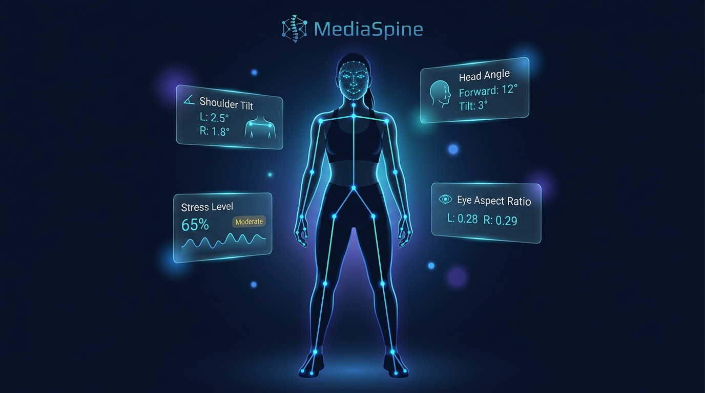

Real-time, browser-based skeletal pose detection and facial biometric analysis — no installs, no backend. Powered by MediaPipe and Groq Llama-3.

A complete biometric analysis suite running entirely in your browser — no data leaves your device until you choose to export.
Using MediaPipe Pose, the app detects 33 full-body landmarks in real time. It calculates shoulder tilt angle, head tilt, neck deviation (profile & frontal view), and flags postural imbalances frame by frame.
Tracks 468 facial landmarks to compute Eye Aspect Ratio (EAR), Mouth Aspect Ratio (MAR), and brow tension — synthesized into a real-time Micro-Stress Level (0–100%) and emotion classification.
8 biometric data cards update every frame — posture status, shoulder angle, head deviation, EAR, MAR, stress index, emotion label, and posture score — all visible at a glance.
After a 3-second stability snapshot, your anonymized biometric data is sent to Groq's llama-3.3-70b-versatile model for a full clinical report: current issues, future risks, and actionable recommendations.
Download the complete AI-generated clinical report as a structured CSV file — ready to share with healthcare providers, integrate into EMR systems, or archive for longitudinal tracking.
All vision processing happens locally in your browser using Web Workers. Video frames never leave your device — only anonymized biometric numbers are sent to the AI when you trigger analysis.
From camera access to clinical report in seconds — entirely in your browser.
Zero build step, zero backend — a pure browser-native AI application.
33-landmark full-body skeletal tracking at 30fps
468-point facial geometry for micro-expression analysis
Ultra-fast 70B LLM inference for clinical AI reports
Utility-first styling with a dark medical-grade UI
Off-main-thread ML processing keeps the UI buttery smooth
No framework overhead — fast, lean, and dependency-free
Zero-config static deployment with global edge CDN
Structured data output ready for clinical integration
No login. No install. Just open the app in Chrome or Edge, allow camera access, and see your posture analyzed in real time.
Works best in Chrome / Edge with a working webcam. Built for the SpineSafe NGO Platform.